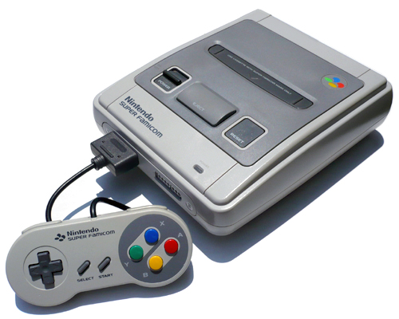

16位时代和3D革命（1990-1995）
世嘉与任天堂的竞争
世嘉 (SEGA)
"拥有更加成熟的游戏体验"

Mega Drive/Genesis (1988)
- 16位Motorola 68000处理器
- 动态背景与更流畅的动画
- "SEGA!"开机音效成为品牌标志
- 以时尚和叛逆形象针对青少年
代表游戏
世嘉的创新:
- 率先推出实验性3D技术 (Virtua Fighter)
- Sega CD 拓展性模块 (1991)
- Sega 32X 3D图形加速器 (1994)
- "玩的就是刺激"营销策略

任天堂 (Nintendo)
"专注于游戏性与家庭友好设计"

Super Famicom/SNES (1990)
- 16位Ricoh 5A22处理器
- Mode 7技术支持伪3D效果
- 创新的L/R肩部按键设计
- 保持家庭友好的品牌形象
代表游戏

大金刚国度
任天堂的创新:
- Super FX芯片技术 (星际火狐)
- ACM (Advanced Computer Modeling)预渲染3D图形
- 专注于独家特许游戏阵容
- 持续强调高质量第一方游戏
VS
16位时代的重要转折点
1991: 刺猬索尼克发布，世嘉品牌形象大幅提升
1993: 《毁灭战士》和《真人快打》引发游戏暴力争议
1994: 成立ESRB游戏分级系统
1994: 《大金刚国度》证明2D游戏仍有强大生命力
1995: 世嘉Saturn和索尼PlayStation发布，标志3D游戏时代正式到来
1995: 任天堂宣布与SGI合作开发Ultra 64 (后来的Nintendo 64)
这一时期的竞争不仅加速了游戏技术的发展，还扩大了游戏市场规模。世嘉和任天堂不同的品牌定位和营销策略展示了游戏产业的多元化发展路径。16位时代是2D游戏艺术的巅峰，同时也是3D游戏技术的萌芽期，为后来的3D革命奠定了基础。
6 / 17